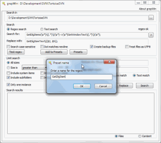

grepWin: Regular expression search and replace for Windows
Go to the download page to download grepWin right now.
grepWin is a simple search and replace tool which can use regular expressions to do its job. This allows to do much more powerful searches and replaces.
In case you're not familiar with regular expressions, we have a very short regular expression tutorial for you.
grepWin adds an entry to the shell context menu to easily search selected folders.
Once started, grepWin allows you to customize the search or replace in many ways.

For example, you can (and maybe you should) limit the search to certain file sizes, file types, ...
Since regular expressions can sometimes get complicated, grepWin allows you to add your most used expressions to a presets list.
Once you've added some presets, you can easily retrieve them again from the presets dialog.
After a successful search or replace, the matching files are listed at the bottom of the dialog. The file list behaves a lot like the common explorer windows. That means a doubleclick will open the file, and a right-click will show you the default shell menu for that file.

If you want to report a bug or request a feature, use our issue tracker to file a new issue or add a comment to an existing one. Make sure to search all issues, not just the still open issues.